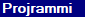
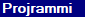

i projrammed in many languages such as
| Language | Year |
| Scratch | 2014 |
| Lua | 2017 |
| HTML5, C | 2018 |
| C++, Python | 2019 |
so first i learned to program on scratch in 2014, here's my scratch account
where you can still see some of my projects.
then, in 2016 i found out about roblox, a platform where you could make your games using lua.
my roblox account
i made a lot of games on roblox and still do, even met some friends i speak with to this day.
those are the two languages i used the most from 2014 to 2021.
i learned html a bit but it was useless to me since i didn't have anywhere to host stuff on or things to make a website about.
i learned c because it's a low level language, i don't use it much + it's too complicated so noo
same thing for c++
python is very similar to lua so it was easy to learn though it was very slow so i didn't use it much other than for school or a discord bot i wrote.
of course, i didn't learn these languages fully in one year. i still learn them everytime i use them except for lua and scratch since i've used them the most.
My Github